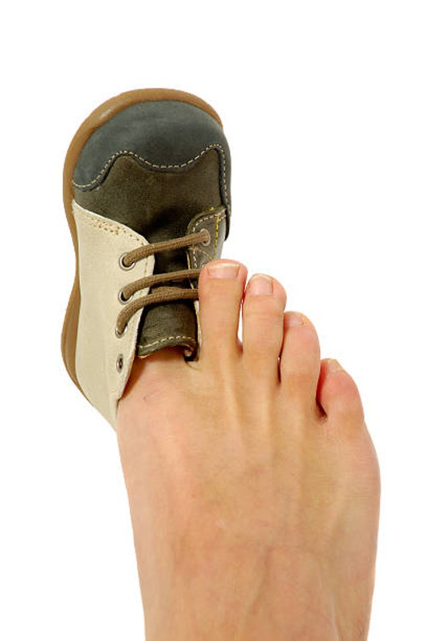
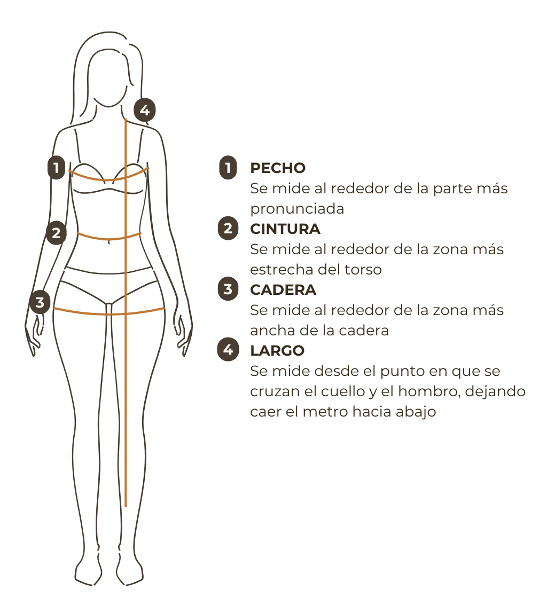

| Hipertensión |
|---|
| 0 |
| 0 |
| 0 |
| 1 |
| 1 |
| 1 |
| 1 |
| 0 |
| 0 |
| 0 |
| 0 |
| 1 |
| 1 |
| 0 |
| 1 |
| 1 |
Distribuciones de probabilidad discretas
Versión PDF
II-1120 Estadística para Ingeniería Industrial I
Steven García Goñi
steven.garciagoni@ucr.ac.cr
steven.garciagoni@ucr.ac.cr
5 de abril de 2026
Agenda
- Preguntas generadoras
- Repaso y analogía
- Algunas distribuciones discretas
- Uniforme
- Binomial
- Binomial negativa
- Hipergeométrica
- Poisson
- Consideraciones finales
- Ejercicio integrador (minicaso)
Preguntas generadoras
- ¿Cuándo se utiliza cada tipo de distribución?
- ¿Cuáles son las características de una distribución de probabilidad discreta?
- ¿Cómo se calcula la probabilidad, sin importar el tipo de distribución?
- ¿Cómo utilizar las distribuciones de probabilidad para resolver problemas?
- ¿Cuál es la relación e importancia de cada distribución con el quehacer ingenieril?
Repaso
Distribuciones de probabilidad
- Se pueden considerar como modelos matemáticos que representan y simplifican la realidad de fenómenos aleatorios.
- En este contexto, es una representación teórica que formaliza ciertos aspectos de un fenómeno observable, permitiendo describir, explicar y predecir el comportamiento de variables aleatorias bajo algunos supuestos.
Distribuciones de probabilidad
- Simplifican la complejidad de la realidad al centrarse en ciertos aspectos relevantes del fenómeno aleatorio.
- Permiten calcular probabilidades de manera sistemática bajo supuestos explícitos.
- Sirven para predecir el comportamiento futuro de un experimento aleatorio si se mantienen las condiciones iniciales
¡Importante!
All models are wrong, but some are useful - George E. P. Box
Parámetros
Los parámetros se emplean para describir el comportamiento de los datos.
Todas las distribuciones se describen mediante parámetros.
Los parámetros se estiman mediante estimadores.
Construcción de analogía
En esta clase utilizaremos una analogía porque lo importante no es memorizar una lista de distribuciones, sino entender las ideas que hay detrás de ellas.
Una vez que se comprenden estas distribuciones fundamentales, es mucho más fácil reconocer y trabajar con otras distribuciones menos conocidas.
Construcción de analogía
En este sentido, los modelos estadísticos, y, en particular, las distribuciones de probabilidad, son como prendas de ropa.
Para vestirse, las personas escogen prendas que se ajusten a sus cuerpos y gustos.
En primer lugar, las personas escogen una prenda (distribución) que sea adecuada para la situación (contexto).
- No vamos a una boda con la ropa del gimnasio, tampoco vamos a la piscina con ropa de gala.
Luego, se prueba la talla (parámetros) de la prenda de ropa (distribución) que mejor se ajuste al cuerpo (la realidad que se desea describir).
Recuerde

- Ojo, son las distribuciones las que se ajustan a los datos y nunca los datos a las distribuciones.
- Cuide el uso del vocabulario técnico correcto.
- Entonces, si una distribución cualquiera NO se ajusta a un conjunto de datos, es la distribución la que no “sirve” como modelo, no los datos.
- Nota: Esto bajo la consideración de que la forma en que se recolectaron los datos y la cantidad de los mismos son adecuados.
- ¿Podemos suponer que el pie (datos) está mal? ¿O escogimos mal el zapato (distribución)?
Construcción de analogía

- Suponga que, para la situación/contexto se selecciona un vestido (distribución).
- Los parámetros son 1 Pecho, 2 Cintura, 3 Cadera y 4 Largo, que buscan aproximar las medidas del cuerpo. Por ejemplo, la página de MUSCARI (link en la imagen) recomienda que si la medida de la cadera es de 94-96 cm, la talla o parámetro es S.
- Entonces, esta prenda de ropa está descrita por estos cuatro parámetros.
- Estos parámetros se estiman mediante estimadores.
Resumen de la analogía
En estadística, hay dos etapas conceptualmente distintas:
Elegir el modelo: Según el contexto, la naturaleza del experimento, las características de la variable, los supuestos probabilísticos, entre otros.
Estimar los parámetros: Una vez elegido el modelo, necesitamos encontrar qué valores de los parámetros lo hacen ajustarse a los datos.
Es decir:
- Primero escogemos el tipo de prenda que creemos adecuada para la situación: esto corresponde a elegir una distribución de probabilidad.
- Luego debemos encontrar qué talla de esa prenda se ajusta mejor al cuerpo. En estadística, esto corresponde a estimar los parámetros del modelo mediante estimadores.
Cierre de la analogía
Las distribuciones de probabilidad no son recetas para memorizar, sino herramientas para modelar la realidad.
Quien ejerce la ingeniería no aplica modelos de forma mecánica. Más bien los selecciona y los ajusta a la realidad, como un sastre ajusta una prenda al cuerpo.
Cierre de la analogía
Fitting models to data is a bit like designing shirts to fit people. If you fit a shirt too closely to one particular person, it will fit other people poorly. Likewise, a model that fits a particular data set too well might not fit other data sets well. - Rahul Parsa
Por eso:
All models are wrong, but some are useful - George Box
Algunas distribuciones discretas
Aclaraciones importantes
Se insiste sobre:
Estas lecciones no tratan de que memorice las diferentes distribuciones de probabilidad, sino que aprenda, con base en las más comunes, cómo extrapolar estos conocimientos a otras distribuciones que quizá hoy no sean tan usadas, pero que en el futuro podrían serlo.
Distribución uniforme discreta
Parámetros
n = \text{cantidad de eventos}
Funciones
f(x|n) = \frac{1}{n}
F(x|n) = \sum_{i=1}^x \frac{1}{n} = \frac{x}{n}
Esperanza E(x) y varianza V(x)
E(x|n) = \frac{n+1}{2}
V(x|n) = \frac{n^2-1}{12}
- Esta distribución es de “calentamiento”. Por su sencillez de aplicación.
- Recuerde que x|n es una expresión condicional, que se lee como x dado n.
- x = 1, 2, \dots, n
Uniforme discreta
¿Cuándo se usa?
No todas las prendas de ropa son adecuadas para todas las ocasiones/climas, sino que se escogen cuidadosamente en función del contexto, incluyendo sus tallas.
Este mismo razonamiento es el que se usa para seleccionar una distribución de probabilidad, según sus características.
Características
- Es una distribución simétrica.
- Todos sus eventos son equiprobables.
- Está descrita por la cantidad de eventos (n).
- Un ejemplo clásico es el lanzamiento de un dado.
Ejercicio de calentamiento
- Un decaedro es un dado con 10 caras, con cada cara de forma de cometa o deltoide. Suponga que cada cara está igualmente cargada.
- Obtenga
- El parámetro de la distribución
- n = 10
- La probabilidad de cualquier evento
- P(x) = \frac{1}{n} = \frac{1}{10}
- La probabilidad de que salga un 1 o un 2
- P(1\,ó\,2) = P(1) + P(2) = \frac{2}{10}
- La esperanza y varianza matemática
- E(x) = 5.5 y V(x)=8.25
- El parámetro de la distribución
Ensayo Bernoulli
- Cada ensayo produce un resultado que se puede clasificar como éxito o fracaso.
- Éxito es el evento de interés y no necesariamente algo positivo. El éxito puede ser: un diagnóstico positivo de enfermedad, el daño de una pieza, ganarse la lotería, etc
- La probabilidad de éxito se denota con p y la de fracaso con q.
- Recuerde las propiedades de la probabilidad q = 1-p
- Los ensayos son independientes.
- Esto implica que la probabilidad de éxito p es la misma en todos los ensayos.
- Una secuencia de ensayos Bernoulli independientes da origen a la distribución binomial.
Recordatorio
En la clase de Probabilidad Básica aprendimos que hay tres tipos de enfoques para obtener probabilidades:
- Clásica a priori
- Clásica empírica
- Subjetiva
En este sentido, la probabilidad de éxito se puede asignar de cualquiera de las tres formas anteriores.
De ser necesario, repase estos conceptos
Distribución binomial
Parámetros
n = \text{cantidad de intentos} p = \text{probabilidad de éxito}
Funciones
f(x|n, p) = \binom{n}{x} p^x (1-p)^{n-x}
F(x|n,p) = \sum_{i=0}^x f(i|n,p)
Esperanza E(x) y varianza V(x)
E(x|n, p) = n\cdot p
V(x|n, p) = n \cdot p \cdot q
- Esta distribución se basa en ensayos de Bernoulli.
- x = 0, 1, 2, \dots , n
- \binom{n}{x} = \frac{n!}{x!(n-x)!}
Distribución binomial
Características:
- Consiste en n ensayos Bernoulli independientes.
- Cada ensayo puede dar dos resultados posibles (dicotómico o binario) que se suelen denotar como éxito y fracaso.
- Los ensayos son independientes, es decir, el resultado anterior no influye en cualquier otro ensayo.
- La variable aleatoria x denota el número de éxitos en n ensayos de Bernoulli, con una probabilidad p.
Binomial interactiva
Ejercicio 01
Recuerde el ejemplo de Diabetes no controlada. Determine la probabilidad de ser hipertenso:
p = \frac{8}{16} = 0.5
Con esto ya tenemos un parámetro, nos falta otro. Recuerde que n es la cantidad de experimentos Bernoulli, por lo general esto es una decisión del experimentador/analista.
Para resolver estos ejercicios puede recurrir a los gráficos interactivos disponibles a lo largo de esta presentación y en este enlace, además, se recomienda que utilice esta aplicación de Matt Bognar, Ph.D.
Ejercicio 01
- Bien, ya conocemos p.
- Ahora, en una clínica odontológica especializada en diabéticos, interesa conocer si un paciente es hipertenso o no, pues al momento de hacer una extracción dental se deben tomar precauciones para evitar complicaciones como sangrado excesivo.
- La visita de pacientes es independiente, es decir, que un paciente hipertenso asista no influye sobre la asistencia de otros pacientes hipertensos.
Ejercicio 01
- Si en un día hay espacio para 12 pacientes, determine:
- La probabilidad que 8 sean hipertensos.
- 0.2128
- La probabilidad que máximo 3 sean hipertensos
- 0.0153
- La probabilidad que al menos la mitad sean hipertensos
- 0.84179
Distribución binomial negativa
Parámetros
r = \text{cantidad de éxitos} p = \text{probabilidad de éxito}
Funciones
f(x|r, p) = \binom{x+r-1}{r-1} p^r (1-p)^{x}
F(x|r,p) = \sum_{i=0}^x f(i|r,p)
Esperanza E(x) y varianza V(x)
E(x|r, p) = \frac{r\cdot q}{p}
V(x|r, p) = \frac{r \cdot q}{p^2}
Esta distribución también se basa en ensayos de Bernoulli. Existen dos parametrizaciones comunes de la distribución binomial negativa. Aquí utilizamos la que modela el número de fracasos antes del r-ésimo éxito.
x = 0, 1, 2, \dots
Distribución binomial negativa
Características:
- El experimento consiste en una serie de ensayos independientes.
- Cada ensayo puede dar como resultado éxito o fracaso. La probabilidad de éxito es constante de un ensayo a otro
- El experimento continua (se siguen realizando ensayos) hasta que un total de r éxitos sean observados. Siendo r un entero positivo.
- Se llama binomial negativa, porque al contrario de la binomial, el número de éxitos es fijo y el número de ensayos es aleatorio.
Binomial negativa interactiva
¿Qué significa esto?
La variable aleatoria x es el número de fracasos antes del r-esimo éxito.
Si r=2, x sería la cantidad de fracasos antes de que ocurra el éxito número 2.
- x = 5: ❌✅❌❌❌❌✅
- x = 6: ❌❌❌❌❌✅❌✅
- x = 3: ✅❌❌❌✅
Note que NO importa donde/cuando sucede el primer éxito.
Lo que si importa es cuántos fracasos suceden antes de que ocurra el segundo éxito (dado que r=2), note además que el último siempre es un éxito.
Ejercicio 02
- Sigamos con el ejemplo anterior, recordemos que ya se estimó 𝑝=0.6. Ahora, al centro de salud, le interesa conocer:
- La probabilidad de que 10 pacientes sean atendidos antes de que 4 sean hipertensos. Es decir, la probabilidad de que hayan 6 fracasos, antes de encontrar 4 éxitos.
- 0.04459
- La probabilidad de que 10 pacientes sean atendidos antes de que 4 sean hipertensos. Es decir, la probabilidad de que hayan 6 fracasos, antes de encontrar 4 éxitos.
- La probabilidad de que hayan 4 fracasos o menos, antes de encontrar 1 persona hipertensa
- 0.98976
Distribución hipergeométrica
Parámetros
- N = \text{tamaño de la población}
- M = \text{cantidad de éxitos en } N
- n = \text{tamaño de la muestra}
Funciones
f(x|n, M, N) = \frac{\binom{M}{x} \binom{N-M}{n-x}}{\binom{N}{n}} \\ F(x|n, M, N) = \sum_{i=0}^x f(i|n, M, N)
Esperanza E(x) y varianza V(x)
E(x|n, M, N) = n \cdot \frac{M}{N}
V(x|n, M, N) = \frac{N-n}{N-1} \cdot n \cdot \frac{M}{N} \cdot \bigg(1- \frac{M}{N}\bigg)
- x = 0, 1, 2, \dots , n
- x \le M y n-x \le N-M
Distribución hipergeométrica
Características:
El conjunto o población a muestrear, que es finito, se compone de N individuos. Cada individuo puede ser caracterizado como éxito o falla y hay M éxitos en la población.
Se selecciona una muestra de 𝑛 individuos sin reemplazo de tal modo que cada subconjunto de tamaño n es igualmente probable de ser seleccionado.
La variable de interés x es el número de éxitos en la muestra. La distribución depende de los parámetros n, M y N.
Hipergeométrica interactiva
Ejercicio 03
- Siguiendo con el ejemplo de la hipertensión. Recuerde que
- N = 15
- M = 9
- La persona puede decidir sobre usar un valor de n particular. Supongamos n=4.
- Calcule la probabilidad que en la muestra haya 3 o menos hipertensos.
- 0.90769
Distribución Poisson
Parámetros
\lambda = \text{promedio de eventos}
Funciones
f(x|\lambda) = \frac{e^{-\lambda}\lambda^{x}}{x!}
F(x|\lambda) = \sum_{i=0}^x f(i|\lambda)
Esperanza E(x) y varianza V(x)
E(x|\lambda) = \lambda
V(x|\lambda) = \lambda
x = 0, 1, 2, \dots
\lambda > 0
Distribución Poisson
Características:
- Los eventos ocurren independientemente en intervalos disjuntos (incrementos independientes).
- El número esperado de eventos en un intervalo es proporcional a la longitud del intervalo (tasa constante \lambda).
- Se describen mediante una tasa constante de ocurrencia en el tiempo o espacio (variable continua).
- x es el número de eventos observados en un intervalo.
- Ejemplos: llamadas a un call center, defectos por metro de tela, accidentes por día.
Poisson interactiva
Ejercicio 04
- Al centro de salud, cada hora llegan los consultantes con hipertensión que se muestran en el cuadro a la derecha.
- ¿Cuál es la probabilidad de que se reciban 4 pacientes hipertensos en una hora?
- Primero hay que encontrar \lambda = E(x) = 2.93
- P(x = 4) = 0.16397
- ¿Cuál es la probabilidad de que se reciban más de 4 pacientes hipertensos en una hora?
- P(x>4) = 0.17311
| Pacientes |
|---|
| 3 |
| 2 |
| 3 |
| 4 |
| 4 |
| 2 |
| 4 |
| 2 |
| 0 |
| 3 |
| 3 |
| 1 |
| 6 |
| 4 |
| 3 |
Diagrama de relaciones entre distribuciones
Consideraciones finales
Estas no son las únicas distribuciones que existen
Siguiendo con la analogía de las prendas de ropa, acabamos de aprender las clásicas: camisetas, blusas, camisas, pantalones, etc.
No obstante, tomemos en cuenta que así como existen otras prendas de ropa (o variaciones de las anteriores), por ejemplo pantalones con campana, ajustados, cortos, largos, etc; enterizos, overalls, etc… También existen otras distribuciones discretas que pueden ser más adecuadas a determinadas situaciones o inclusive ajustarse mejor al conjunto de datos.
Consideraciones finales
En este sentido, ésta cátedra le recomienda no depender de aplicaciones o software para calcular probabilidades en las distribuciones clásicas.
Sino que comprenda la base procedimental de cualquier distribución discreta para que pueda expandir o generalizar dicho conocimiento a otras distribuciones con mayor grado de especialización.
Nota: Esto no implica que se desaconseje el uso de la tecnología, solo se le insta a no depender de ello.
Consideraciones finales
- Existen pruebas estadísticas para determinar cual es la distribución que mejor se ajusta a los datos. No obstante, este tema: Bondad de ajuste, queda fuera del alcance de este curso.
- Básicamente, lo que hacen esas pruebas es probar simultáneamente muchas prendas y tallas de ropa y escoger la mejor.
Ejercicio integrador
- A un restaurante muy famoso llegan una determinada cantidad de clientes cada 30 minutos. A esos clientes se les pide llenar una encuesta de satisfacción a cambio de una regalía, la cantidad de clientes que aceptan (1) y rechazan (0) se registran en una hoja de cálculo. La decisión de completar la encuesta es independiente.
- Esta regalía se compone de 10 galletas caseras, que pueden ser galletas de chispas de chocolate (0) y galletas red velvet (1). La producción de galletas también se registra en una hoja de cálculo en este Excel.
Ejercicio integrador
- Determine:
- La probabilidad de que en un momento determinado del día hayan 10 clientes en el restaurante famoso.
- La probabilidad de que de 15 personas, 10 llenen la encuesta de satisfacción.
- La probabilidad de que 3 o menos galletas sean Red Velvet
- La probabilidad de que haya que preguntarle a más de 5 personas para obtener 3 respuestas en la encuesta de satisfacción.
- La cantidad de galletas red velvet que tiene cada regalía en promedio.
- El promedio de la cantidad de rechazos que debe haber para que se completen 30 encuestas de satisfacción.
- Obtenga el promedio de personas que aceptan responder a la encuesta por día, considerando una jornada de trabajo de 8 horas e independencia.
- A modo de práctica para el examen, plantee otros ejercicios y trate de resolverlos.
Bibliografía
- Walpole, R.; Myers, R.; Myers, S. y Ye, K. Probabilidad y estadística para ingeniería y ciencias (9na Edición).
- Capítulo 5
- Devore, J. Probabilidad y Estadística para Ingeniería y Ciencias (7ma Edición).
- Capítulo 3
- Montgomery, D; Runger, G. Applied Statistics and Probabilty for Engineers (5th Edition)
- Capítulo 3